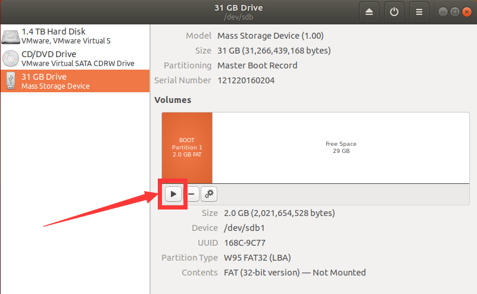

Quick-boot Linux-Make an SD card to boot the development board Linux system#
1.Adjust the dial switch#
Set the dial switch on the development board to the status of starting from the SD card, as shown in the following figure:
The dial switch is in this position on the development board:
2.Set the SD card partition#
Next you need to make an SD card to boot Linux. Connect the SD card (e.g. via a card reader) to the Ubuntu system and open the Disks tool in the Ubuntu system:

My SD card is here 31 GB Drive. If you select it, you can see that there are three areas in the SD card:
a. Partition of type FAT named BOOT
b. Partition of type Ext4 named ROOTFS
c. Free Space

This is the state we need. If your SD card is also in this state (there is no strict requirement for the size of the partition), you can skip this section to see it 3.Populate the SD card partition directly. However, in order to demonstrate a complete process, I first restore the SD to the state without partition, select the corresponding partition, click the “ - “ icon to delete the current partition, and finally change to the state as shown in the following figure:

Click the “ + “ icon to create a new partition. The first partition needs to be in the FAT format, with a size of 2G and a name of BOOT :


Click Create the button to complete the partition creation, and click the “ ▶ “ button to mount the partition:

Click Free Space to create a second partition with similar steps, select Ext4 the format, allocate 20g in size (adjust according to your actual needs and limitations), and name it ROOTFS :

The final state is shown in the following figure. Note that both partitions need to be mounted:

3.Populate the SD card partition#
After partitioning the SD card, copy the files required for starting the system to the corresponding partition.
Extract course_s2/sdCardSystemFiles/sdCardSystemFiles.zip to obtain files such as boot. SCR, BOOT. Bin, image. UB, rootfs. Tar. GZ, and so on.
Copy the boot. SCR, BOOT. Bin, and image. UB to the BOOT partition:
Extract the rootfs. Tar. GZ to the ROOTFS partition with root permission, open the terminal in rootfs.tar.gz the path, and enter the following command:
sudo tar zxvf./rootfs.tar.gz -C/media/alinx/ROOTFS/ && sync

Then eject the SD card from Ubuntu.
4.Start Linux#
Insert the SD card you just made into the SD card slot of the development board:
Connect UART of development board to PC ( The CP210x driver needs to be installed on the PC : course_s2/documentations/drivers/CP210x_Windows_Drivers.zip):
Open the serial port tool, select the com port we just connected, set the baud rate to the 115200, close the flow control, and click the OK button:
Connect 12 V power supply:
You can see the output information in the serial port tool:
The system has started successfully. Enter the user name petalinux. The first login will prompt for the password and enter it again for confirmation. . After that, you can use the password entered for the first login.